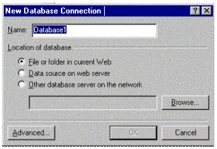

|
| ||
|
| ||
Microsoft Corporation
March 30, 1999
Contents
Introduction
New Database Features
Database Connectivity
Database Security
Security Tips for Administrators
Creating Custom ASP Solutions
Programming Solutions
System Requirements for the Database Features
Summary
The Microsoft® FrontPage® 2000 Web site creation and management tool makes it easier than ever for you to collect and display data on your own Web pages. With new database features in FrontPage 2000, you can create new or connect to existing databases and incorporate live data directly into your Web pages. FrontPage automatically generates the scripts needed to display and add information to databases, so no programming is required. If you require custom functionality, you can edit the script files to build exactly the solutions you need.
You may be familiar with previous versions of Microsoft FrontPage that introduced easy-to-use form-handling features, such as sending form data to a text file in a FrontPage-based Web site, to an email address, or to a custom script for special handling.
FrontPage 2000 builds on these form capabilities by providing new features to help you collect, store, and retrieve information from databases. With just a few mouse clicks, you can send form information from a Web page to a new or existing database or generate pages that display live database information.
With database publishing in FrontPage 2000, you can create a form and then specify where the form data should go. For example:
With the Database Results Wizard in FrontPage 2000, you can build Web pages with live data that updates each time the page loads. Using this wizard, you can specify which records display, as well as the format in which the data will appear on the Web pages. If you choose to use custom queries, you can enter SQL SELECT statements using the Database Results Wizard.
Using FrontPage 2000, you can incorporate data into your Web pages from any ODBC-compliant database. The database can reside either on the Web server itself or on a remote database server.
Drivers are available for tab or comma separated text files and Microsoft Excel, and for these file-based databases:
Drivers for server-based databases include those for Microsoft SQL Server™ and Oracle.
FrontPage 2000 makes use of Active Server Pages (ASP), a server-side scripting environment that you can use to create dynamic Web pages. To utilize a database from within an ASP-based application, you will need a database connection or a set of data-binding instructions.
FrontPage stores all database-connection information in a file called Global.asa. You can either create a database connection through the Database tab in the Web Settings dialog box, or you can have FrontPage create a database connection when you import (or drag and drop) a Microsoft Access file into a FrontPage-based Web. In either case, FrontPage automatically writes connection information to Global.asa for you.
Traditionally, a database connection takes the form of a data source name (DSN)--an ODBC resource that contains the information needed to connect to a database. FrontPage 2000 requires a DSN to create a connection only to a database that resides outside of the FrontPage-based Web.
Using the New Database Connection dialog box in FrontPage 2000, you can browse for databases in the FrontPage-based Web or for system DSNs that live on the Web server machine.

If you have the correct security permissions, you can find a system DSN for a remote database by connecting directly to the database server. If you don't have permissions, contact the server administrator and request a system DSN to connect to the remote database.
The final release of FrontPage 2000 will allow administrators to disable DSN browsing and the use of FrontPage database features on specific ports or a Web or sub-Web basis.
It is extremely important to maintain the security of a database that resides on a Web server. Using the FrontPage Server Extensions, administrators can ensure that only users with administrative or authoring privileges for a Web will be able to access databases in that Web.
The recommended location for file-based databases is in the FPDB folder in the FrontPage-based Web. With the FrontPage Server Extensions installed on the Web server, FrontPage automatically marks this folder as not browsable, scriptable, or executable. This ensures that users will be able to access a database only through Active Server Pages created for that purpose--not by simply browsing to the database.
By default, FrontPage 2000 places a new Microsoft Access database in the FPDB folder. In addition, when a user imports an existing database to a Web, FrontPage creates the FPDB directory (if it does not already exist), and uploads the file to the FPDB directory or to one specified by the user. (Note: If you choose to put the database in a directory other than the FPDB directory, you will see an entry in the Component Errors report recommending that you move it to the FPDB directory for security reasons.)
It is important to note that FrontPage does not provide any database security beyond the security settings that already exist within the database. If update restrictions are not set within the database, any user with authoring or administrative rights to the Web will be able to access and change the contents of the database.
Another issue to note is that publishing ASP pages to a Web server that does not support ASP can expose sensitive information (such as database passwords) to anyone browsing those files. Be careful not to publish ASP files to a non-ASP server.
At times, you may need to modify the ASP generated by the database features in FrontPage 2000. For instance, you may want to create an order form in which the fields presented depend on the payment method the user selects. FrontPage does not generate ASP to handle this scenario, where the form fields and payment information are in one database region. However, you can edit files that FrontPage creates in order to implement custom solutions.
When you create pages that use the database features in FrontPage 2000, FrontPage creates one ASP file and four include files. The include files, which contain ASP scripts used by the pages, are stored in a hidden _fpclass folder in the FrontPage-based Web:
Authors can use FrontPage 2000 and its HTML editing features to modify the scripts in these files. [Note: To view hidden files in a FrontPage-based Web, select Tools, Web Settings, Advanced, and Show documents in hidden directories.] To undo any changes to these include files, you can always delete the files from the Web. FrontPage will create new versions of the deleted files the next time a database page is saved.
All database pages in a FrontPage-based Web point to these four include files in the _fpclass folder. Any changes made to these include files will affect all database pages in a Web. To make changes to include files that will affect only a single page or a subset of pages, follow these steps:
FrontPage will update the database page(s) to point to the include files in the new folder. From this point forward, you can modify the source in any of the include files in the new folder, and only those pages created prior to moving the files to the new folder will be affected.
If you need to regenerate the original ASP code for these include files that you removed, delete the include files from the new folder and proceed through the Database Results Wizard for each page that requires revised include files. When you save the pages, they will point to newly generated copies of the include files in the _fpclass folder.
FrontPage 2000 was designed to make it easy for users without programming expertise to create pages that interface with databases. Since FrontPage 2000 now preserves your HTML source without modification, you can easily make edits to the ASP pages generated by FrontPage 2000 to create data-driven Web solutions.
To take advantage of enhanced database programming tools such as the Visual Studio® development system's Integrated Database Tools, developers can import their ASP scripts to the Microsoft Visual InterDevÔ 6.0 Web development system. For more information about this product, see http://msdn.microsoft.com/vinterdev/prodinfo/evaluation/eval2.asp.
On the client, only a browser is required to view pages created with the database features in FrontPage 2000. The following software is required on the Web server hosting the pages:
New database features in Microsoft FrontPage 2000 provide an easy way to create Web pages that incorporate useful information from a variety of data sources. Using FrontPage 2000, you can create Web pages that collect or display data dynamically--without extensive database or programming skills. Administrators will find that creating new data sources and connecting to databases in FrontPage 2000 require less administrative overhead, making data access and retrieval over intranets and the Internet easier than ever.
Did you find this material useful? Gripes? Compliments? Suggestions for other articles? Write us!
© 1999 Microsoft Corporation. All rights reserved. Terms of use.